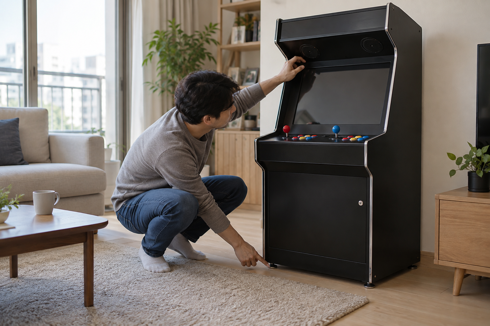
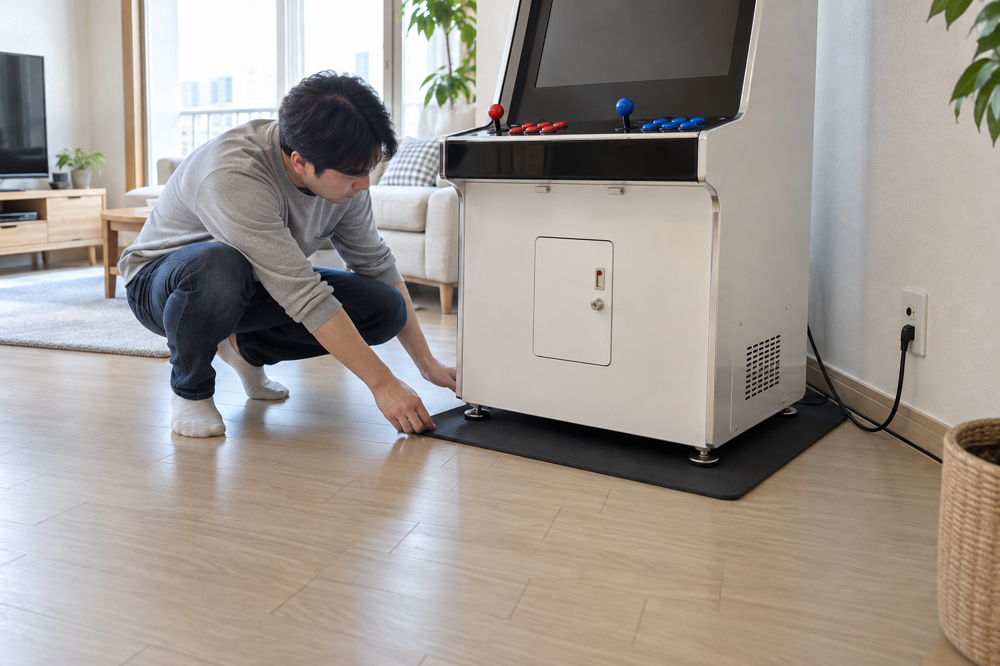

아파트에서 오락기 소음을 줄이려면 스피커 음량과 버튼·조이스틱 조작음, 바닥으로 전해지는 진동을 먼저 나눠 확인해야 합니다. 음량을 낮추고 기기를 안정적으로 배치한 뒤, 주변이 조용한 시간은 피해 짧게 실제 사용 조건에서 다시 들어보세요.

어떤 소리인지 먼저 나눠 확인하세요
게임 소리를 낮춘 상태에서 버튼과 조이스틱을 하나씩 사용해 보면 스피커 소리와 조작음을 구분하기 쉽습니다. 조작할 때만 바닥이나 가구가 울린다면 접촉부의 흔들림과 수평도를 살펴보세요. 소리가 나는 순간과 장소를 적어 두면 조정할 대상을 정하기 쉬워집니다.
스피커 음량과 조작음, 바닥 진동은 서로 다른 조건으로 나눠 확인해야 합니다.
음량은 작게 시작하고 사용 시간을 정하세요
기기와 TV 중 어느 쪽에서 소리가 나는지 확인한 뒤 낮은 단계부터 조정하세요. 시작 화면보다 실제 게임 장면에서 소리가 다르게 들릴 수 있으므로 자주 하는 게임으로 한 번 더 확인하는 편이 좋습니다. 가족과 사용 시간대를 미리 정하고 늦은 시간에는 조작 테스트를 길게 하지 않는 편이 좋습니다. 기본 음량 조정 순서는 오락기 소리 조절 방법에서 이어서 확인하세요.
아파트에서는 작은 음량으로 시작하고 사용할 시간대를 미리 정하는 편이 좋습니다.

배치와 바닥 접촉부를 점검하세요
기기가 흔들리거나 벽과 가구에 닿아 있으면 조작할 때 다른 부분이 함께 울릴 수 있습니다. 평평하고 견고한 자리에 두고, 필요하면 기기의 무게와 크기에 맞는 미끄럼 방지·진동 완화용 받침을 제품 안내에 맞게 사용하세요. 통풍구나 케이블 경로를 막지 않고, 받침을 놓은 뒤에도 흔들림이 없는지 확인하세요.
받침은 소음 감소를 단정하기보다 기기의 무게와 안정성에 맞는지를 먼저 확인해야 합니다.
기기 형태와 사용 조건을 함께 비교하세요
노리박스 제품 목록에는 스탠드형·좌식형·테이블형과 TV연결형으로 안내된 상품이 함께 있습니다. 소리나 진동이 전해지는 경로는 기기를 세우는지, 가구 위에 놓는지, TV와 연결하는지에 따라 달라질 수 있으므로 구매 전에 실제 배치를 그려 보세요. 기기 크기와 동선은 우리 집 공간에 맞는 오락기 형태에서 함께 비교할 수 있습니다.
소음 대응은 오락기의 형태와 화면, 가구·바닥 접촉 조건을 함께 비교해야 합니다.
- 기기의 음량과 조작음을 따로 확인하기
- 벽·가구와 닿는 부분과 바닥 수평을 살피기
- 통풍구와 케이블을 막지 않는 받침을 검토하기
- 조용한 시간은 피해 실제 사용 조건에서 다시 듣기
현재 노리박스 오락실게임기와 관련 제품은 제품자세히보기에서 확인하세요.